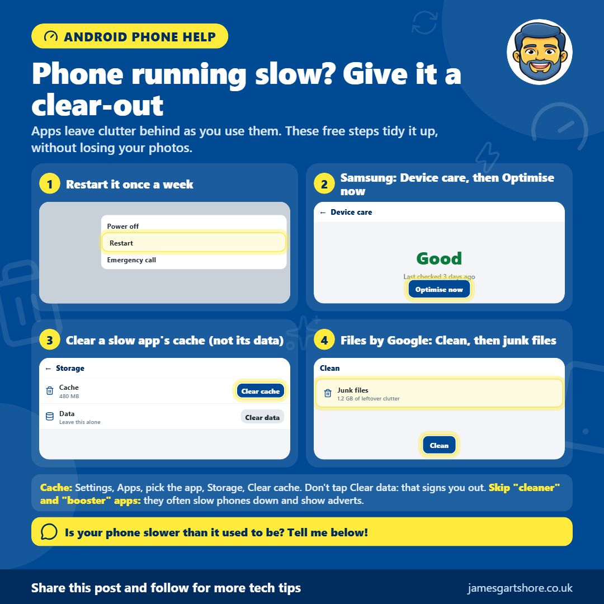

Phone Running Slow
By James Gartshore · · Everyday tech
Hi everyone, is your Android phone getting slower? Apps leave clutter behind as you use them. These free steps tidy it up, without losing any of your photos or messages.
1. Restart your phone once a week. Press and hold the power button, then tap Restart. It clears out apps left running in the background. 2. On a Samsung phone, go to Settings, then Device care, and tap Optimise now. 3. If one app is slow, clear its cache: Settings, then Apps, tap the app, then Storage, then Clear cache. Don't tap Clear data, as that signs you out of the app and can delete things. 4. Install the free Files by Google app, tap Clean at the bottom, and clear the junk files it finds.
Please don't install "cleaner", "booster" or "antivirus" apps that promise to speed your phone up. They often do the opposite, and fill your phone with adverts.
Is your phone slower than it used to be? Tell me below!
I hope this helps. Share this post with anyone who might find it useful, and follow for more tech tips.